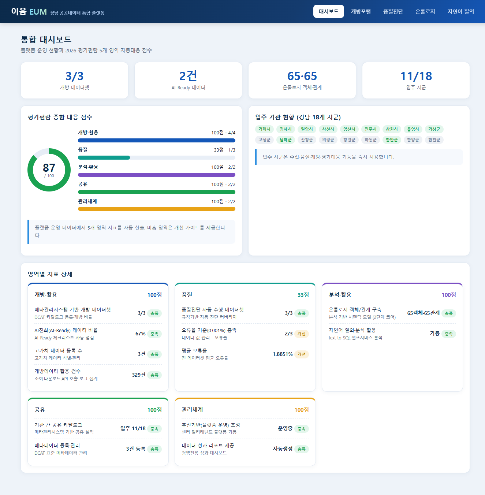
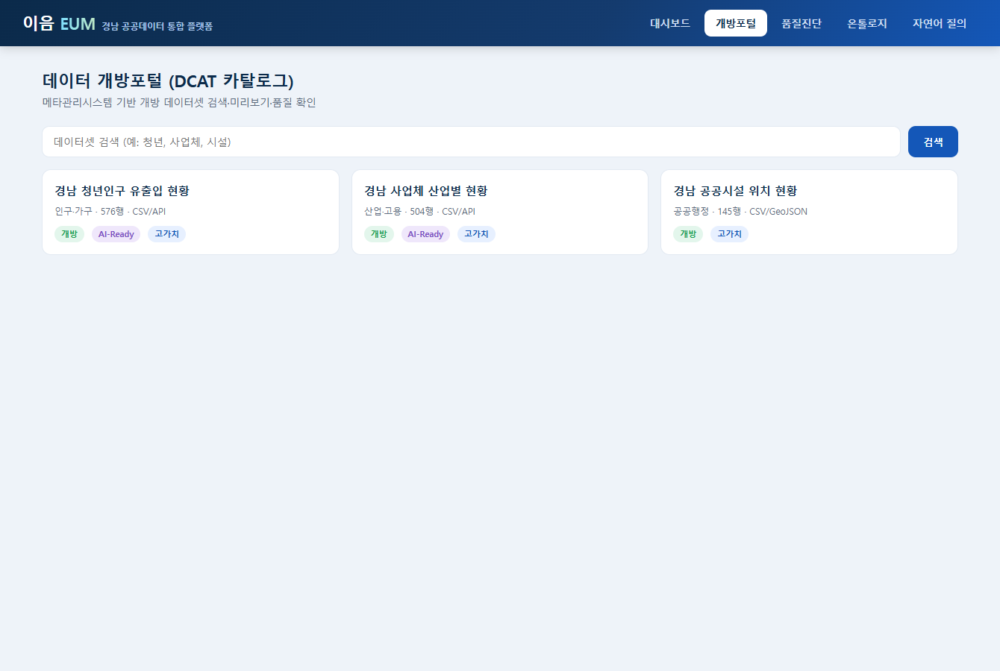
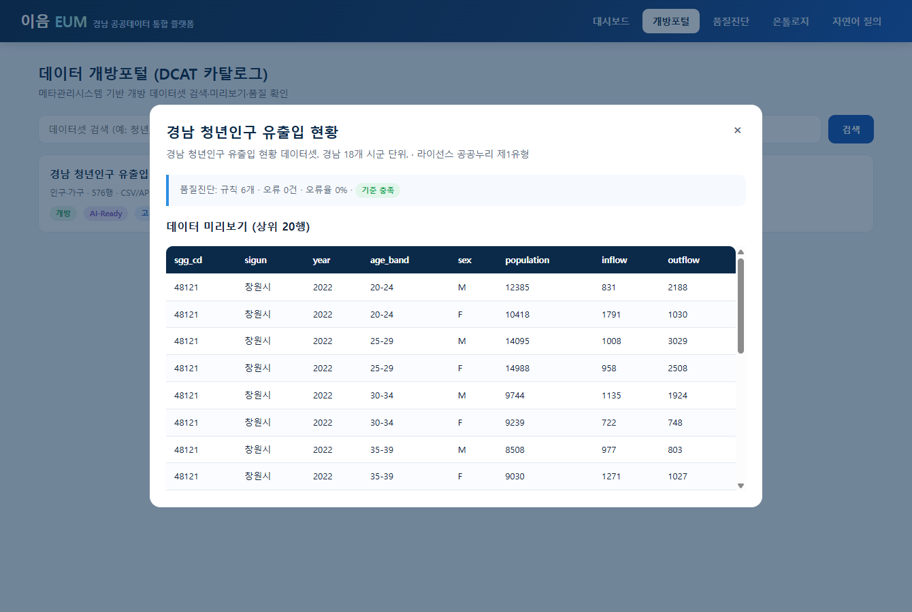
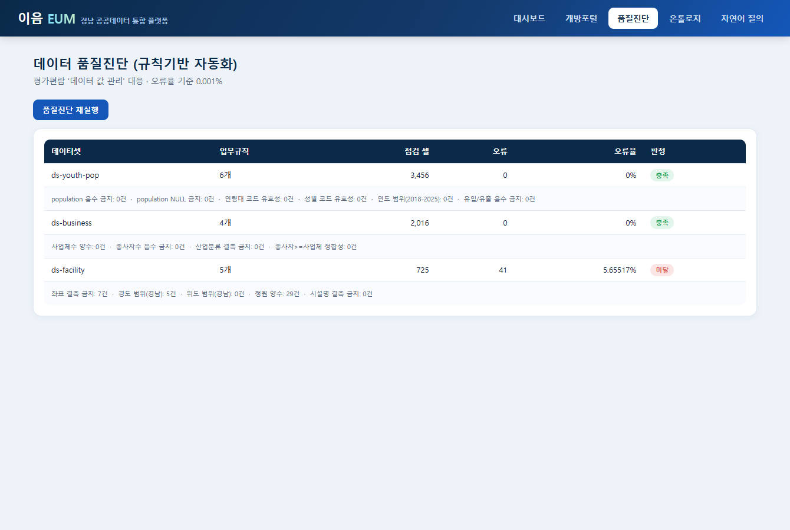
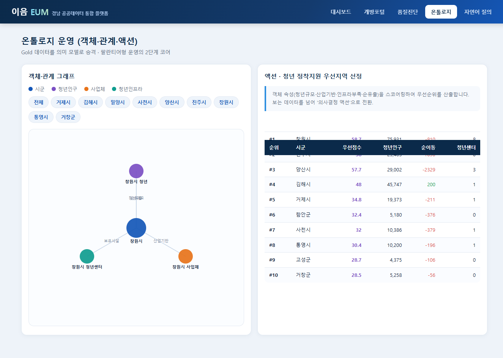
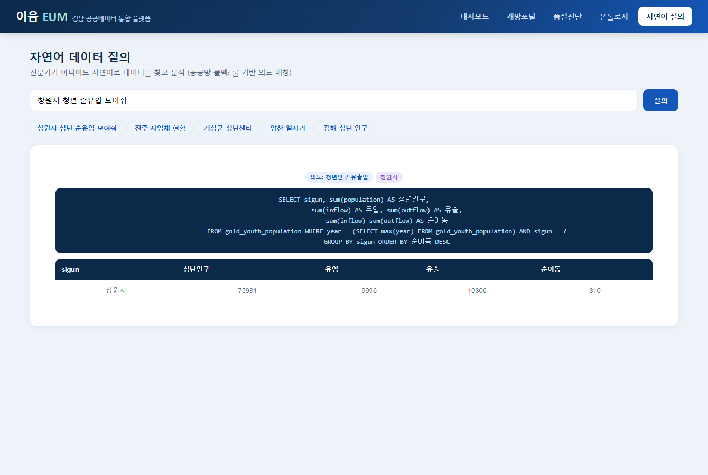

제작 결과 요약
2단계(2026-06-10) — Next.js 14 App Router + TypeScript + Supabase 전면 재구성.
3단계(2026-06-14) — 데이터 포털·등록·개방 API를 중심으로 한 탭별 고도화, 분석 탭 17종/시각화/지도 마커·큘러스터·히트맵/매뉴얼·status.html 갱신, API 인증 강화, 대시보드 7일 트렌드 추가. 에이전트 스킬·위키·롤백 지점 준비.
계획서 7계층 대비 구현 범위
제작 타임라인 (단계별 + 검증)
① 환경 준비 & 프로젝트 골격
Python 3.11.9 확인. 필수 패키지 설치(FastAPI 0.136 · uvicorn 0.49 · DuckDB 1.5 · pydantic). 프로젝트 디렉터리 생성.
fastapi OK / duckdb OK / uvicorn OK / ALL OK created: app/ web/ data/② 저장/질의 계층 (L2) — database.py
DuckDB 커넥션·스레드 안전 래핑. 플랫폼 메타 스키마 6종 생성(tenants·catalog·quality_results·onto_objects·onto_links·usage_log).
스키마 초기화 멱등 동작 확인③ 수집 시뮬레이션 (L1) — seed_data.py
경남 18개 시군 합성 공공데이터 3종 생성: 청년인구 유출입(20~39세, 5세 단위)·사업체 산업별·공공시설(공간좌표). 품질엔진 검증용으로 의도적 결함(좌표 결측 5%·정원 0 이상치)을 주입.
SEED: youth 576행 · business 504행 · facility 145행 (총 1,225행)④ 품질진단 엔진 (L3) — quality.py
데이터셋별 업무규칙(6·4·5개) 정의, 위반 건수 집계, 오류율 산출(평가편람 기준 0.001%). 진단결과 저장.
QUALITY 검증: ds-youth-pop rules=6 errors=0 rate=0.0% passed=True ds-business rules=4 errors=0 rate=0.0% passed=True ds-facility rules=5 errors=41 rate=5.65517% passed=False ← 주입 결함 정확 탐지⑤ 평가대응 엔진 (횡단) — evaluation.py
2026 평가편람 5개 영역 19지표를 플랫폼 운영 데이터에서 자동 산출. 영역별 점수·종합점수 계산.
EVAL overall=87 개방·활용 100 / 품질 33 / 분석·활용 100 / 공유 100 / 관리체계 100 (품질 33점은 facility 결함을 반영한 정직한 산출)⑥ 온톨로지 코어 (L4) — ontology.py
Gold 데이터를 객체(시군·청년인구·사업체·청년인프라)·관계(청년규모·순유출·산업기반·보유시설)로 승격. 액션: 청년 정착지원 우선지역 스코어링.
ONTOLOGY: objects=65 · links=65 (기준연도 2025) ACTION 우선지역: #1 창원(58.7) #2 진주(58.0) #3 양산(57.7)⑦ 자연어 질의 (L5) — nlquery.py
LLM 없이 동작하는 의도(intent) 매칭 + 안전한 SQL 자동생성(공공망 폭백). 시군명·주제어 해석.
NLQ '창원시 청년 순유입 보여줘' → intent=청년인구 유출입 · rows=1 · OK⑧ API 게이트웨이·웹서버 (L6) — main.py
FastAPI 단일 진입점. 10개 REST 엔드포인트 + 정적 프론트엔드 서빙. 기동 시 시드·품질·온톨로지 자동 파이프라인.
서버 기동 → /api/overview 200 OK datasets=3 open=3 ai_ready=2 objects=65 tenants_on=11/18 overall=87⑨ 프론트엔드 SPA — index.html · style.css · app.js
바닐라 JS(의존성 0, CDN 없음 — 공공망 친화). 5개 탭: 대시보드·개방포털·품질진단·온톨로지·자연어질의. 온톨로지 그래프는 외부 라이브러리 없이 SVG로 직접 렌더링.
전 정적자원 200 OK (index.html · style.css · app.js)⑩ 브라우저 동작 검증 + 버그 수정
실제 브라우저로 5개 화면을 렌더링·캡처. 발견한 이슈 2건 즉시 수정.
FIX 1: catalog INSERT 파라미터 14→15개 불일치 수정 FIX 2: 개방포털 탭 진입 시 카탈로그 자동 로드(검색 전 빈화면 해소) FIX 3: 표 헤더 sticky 제거(전체캡처 시 겹침 해소) RESULT: 5개 탭 전부 실데이터 렌더링 확인 ✓⑪ 아키텍처 설계·계획 (Task 0)
Brainstorming → Writing-Plans. 설계문서·15태스크 플랜 작성·커밋.
docs/superpowers/specs/2026-06-10-nextjs-supabase-migration-design.md docs/superpowers/plans/2026-06-10-nextjs-supabase-migration.md⑫ Task 1: 프로젝트 초기화 (Next.js 14)
package.json(Next.js 14.2·@supabase/ssr·js-yaml·Tailwind·Jest)·tsconfig·next.config·jest.config·.env.local 생성.
npm install 완료 · 커밋 0006178⑬ Task 2~3: Supabase 클라이언트·DB 마이그레이션
lib/supabase/client.ts(브라우저)·server.ts(SSR+서비스롤)·middleware.ts 세션 갱신. 마이그레이션 3개: 001(스키마+RLS), 002(집계 RPC 4개), 003(품질 RPC 3개).
supabase/migrations/ 3개 · RLS 정책·인덱스 완비⑭ Task 4~5: 시드 데이터·코어 라이브러리
18개 시군 시드·Gold 합성 데이터 생성 스크립트. TypeScript 코어 6모듈 포팅: quality·evaluation·ontology(YAML스키마)·nlquery·submission·planning.
lib/quality.ts · lib/evaluation.ts · lib/ontology.ts lib/nlquery.ts · lib/submission.ts · lib/planning.ts⑮ Task 6: API Routes 14개
Next.js App Router API Routes: overview·tenants·catalog·quality·evaluation·ontology·ontology/action/[key]·nlquery·submission(GET/POST)·submission/[id]·submission/[id]/decision·submission/[id]/comment·plan.
app/api/ 14개 route.ts · 멀티테넌트 권한 분기 내장⑯ Task 7~8: 레이아웃·6개 탭 페이지·Jest 테스트
app/layout.tsx·login/page.tsx·Header 컴포넌트. 6개 탭(대시보드·포털·품질·온톨로지·AI·등록) Client Components. Jest 단위 테스트 3파일(quality·evaluation·ontology).
Tailwind CSS · 서버사이드 인증 redirect · Client fetch 패턴⑰ Task 9~10: 구파일 정리·문서 업데이트
Python 모듈(app/*.py)·FastAPI 진입점(run.py)·Vanilla JS(web/)·pytest(tests/)·requirements.txt 전체 삭제. status.html 2단계 반영 업데이트.
삭제: app/__init__.py app/main.py app/database.py app/seed_data.py app/quality.py app/evaluation.py app/ontology.py app/nlquery.py app/auth.py app/planning.py app/submission.py web/ tests/ run.py requirements.txt⑱ 탭별 고도화 — 데이터 포털·등록·개방 API
데이터 포털: 카드에 다운로드 횟수·최근 업데이트·상세보기 추가. 상세 모달에 개요/미리보기/메타데이터/API 예시 탭 분리. 데이터 등록: 드래그앤드롭 강화·업로드 진행률·컬럼 타입 자동 추론(DATE/BOOLEAN/NUMBER/TEXT)·심사 요청 체크리스트. 개방 API: API 키 재발급·복사, 엔드포인트별 사용량 차트, 웹훅 설명/시크릿 필드 개선.
components/portal/PortalClient.tsx · components/portal/DatasetModal.tsx components/submission/SubmissionClient.tsx components/openapi/OpenApiClient.tsx⑲ 분석·지도·카탈로그·매뉴얼 고도화
분석 탭: 6종 분석 추가(ANOVA·Mann-Whitney·Wilcoxon·Logistic Regression·PCA·K-Means·Survival·STL) 및 시각화 개선. 지도: 마커/큟러스터/히트맵, 시설 상세 패널, 반경 검색, 시설 비교. 카탈로그: 샘플 데이터 연동(data/samples/ 5종). 매뉴얼: 신규 기능 반영 갱신.
components/analytics/AnalyticsClient.tsx · components/map/MapInner.tsx components/portal/PortalClient.tsx · components/manual/ManualClient.tsx⑳ 보안·인증·middleware 정리
API 키 기반 외부 인증 강화, 불필요한 middleware 경로 축소, RLS 정책 유지.
middleware.ts 축소 · API key scope 검증 강화탭별 구현 현황
| 탭 | 주요 기능 | 상태 | 비고 |
|---|---|---|---|
| 대시보드 | 실시간 KPI·평가편람 종합점수·시군별 차트·최근 이력·7일 수집 트렌드 차트 | 고도화 완료 | 2026-06-14 |
| 데이터 포털 | 카탈로그 검색/필터·카드 개선·상세 모달(개요/미리보기/메타데이터/API 예시)·다운로드 | 고도화 완료 | 2026-06-14 |
| 데이터 등록 | 드래그앤드롭 업로드·진행률·컬럼 타입 추론·심사 체크리스트·승인/반려 워크플로우 | 고도화 완료 | 2026-06-14 |
| 개방 API | API 키 발급/재발급/복사·사용량 차트·웹훅 등록·API 문서 | 고도화 완료 | 2026-06-14 |
| 수집 | 수집 소스 카드·스케줄·수집 로그·소스 그룹화 | 고도화 중 | cron 도우미·태그 추가 예정 |
| 가공 | 파이프라인 DAG·규칙 미리보기·템플릿·실행 이력 | 고도화 중 | flowchart·롤백 추가 예정 |
| 품질진단 | 규칙 카테고리별 점수·이슈 우선순위·상세 팝업·진단 이력 비교 | 고도화 중 | radar 차트·비교 추가 예정 |
| 분석 | 17종 통계분석(기술·교차·t-검정·ANOVA·회귀·PCA·K-Means·생존·STL)·시각화 | 고도화 완료 | 2026-06-14 |
| 지도 | 마커/큟러스터/히트맵·드릴다운·반경 검색·시설 비교·모바일 반응형 | 고도화 완료 | 2026-06-14 |
| AI 질의 | 대화형 채팅·추천 질문·결과 테이블/차트·대화 낳아내기 | 고도화 중 | 채팅 흐름·공유 추가 예정 |
| 온톨로지 | 지식 그래프·줌/팬/노드 클릭·검색/필터·상세 패널·연관 개체 | 고도화 중 | D3 시각화 개선 예정 |
| 리포트 | 평가편람 점수 시각화·리포트 다운로드·기관별 비교 | 고도화 중 | radar/bar·PDF/PNG 추가 예정 |
| 관리자 | 기관 목록 필터/검색/페이징·승인/반려·역할 변경 | 고도화 중 | 워크플로우 UI 개선 예정 |
| 파이프라인 | 수집→가공→분석→품질→개방 흐름·단계 상태·실행 이력 타임라인 | 고도화 중 | flowchart·상태 뱃지 추가 예정 |
동작 검증 — 실제 화면 (브라우저 캡처)






산출물 구성 & 실행 방법
| 파일/디렉터리 | 역할 | 계층 |
|---|---|---|
lib/quality.ts | 규칙기반 품질진단 (RPC + 인메모리) | L3 |
lib/evaluation.ts | 평가편람 5영역 지표 자동산출 | ⊗ |
lib/ontology.ts | YAML스키마 온톨로지·그래프·액션 스코어링 | L4 |
lib/nlquery.ts | 자연어 의도매칭·Supabase 질의 | L5 |
lib/submission.ts | CSV파싱·JSONB저장·승인/반려/코멘트 | L6 |
lib/planning.ts | 개방계획·품질개선계획 초안 생성 | L6 |
lib/supabase/ | 브라우저·SSR·서비스롤 클라이언트 | L0 |
app/api/ (40+ route.ts) | Next.js API Routes (REST) | L6 |
app/[page]/ (14개 탭) | App Router 페이지·Client Components | L6 |
components/portal/ | 데이터 포털·상세 모달·통계 | L6 |
components/submission/ | 데이터 등록·심사 상세 | L6 |
components/openapi/ | 개방 API 키·웹훅·문서 | L6 |
components/analytics/ | 17종 통계분석·시각화 | L5 |
components/map/ | Leaflet 지도·히트맵·큟러스터 | L6 |
supabase/migrations/ (20개) | 스키마·RLS·RPC·감사로그·수집·가공·분석 마이그레이션 | L2 |
supabase/seed.sql | 18개 시군·카탈로그·사용로그 시드 | L1 |
data/samples/ | 5종 샘플 데이터(CSV/JSON) | L1 |
config/ontology-schema.yaml | 온톨로지 가중치·액션 정의 | L4 |
middleware.ts | Supabase 세션 자동 갱신 | L0 |
__tests__/lib/ (3개) | Jest 단위 테스트 | — |
npm install →
.env.local에 Supabase URL·키 설정 →
supabase db push →
npm run dev → http://localhost:3001테스트
npm test배포 Vercel 연결 후 환경변수 설정
에이전트·위키·롤백 자산
.agents/skills/eum-platform*.md) 생성.
C:\업무\agents 시스템의 backend · frontend · dba · security · tester-* 에이전트 메모리에
이음 플랫폼 지식 등록, 위키 MoC 이음플랫폼.md 및 노트 갱신.
- SESSION_GUIDE 준수: orchestrator → lead-dev → 담당 에이전트 체인, 위키 read/write 루프 적용
- 롤백 지점: git tag
rollback/2026-06-14-tab-enhancements(fa40acf6) —git reset --hard rollback/2026-06-14-tab-enhancements로 복원 - 검증 체인:
npx tsc --noEmit·npm run lint·npm test·npm run build
완료 범위 & 다음 단계
3단계 고도화 완료 DONE
- 데이터 포털 카드 개선 및 상세 모달 탭화
- 데이터 등록 업로드 진행률 및 심사 체크리스트
- 개방 API 키 재발급·사용량 차트·웹훅 폼 개선
- 분석 탭 6종 분석 추가 및 시각화 고도화
- 지도 마커/큟러스터/히트맵 및 시설 비교
- 카탈로그 샘플 데이터 연동(data/samples/ 5종)
- 매뉴얼/도움말 신규 기능 반영 갱신
- status.html 최신 상태(탭별 현황·산출물) 갱신
- API 인증 강화 및 middleware 축소
다음 단계 NEXT
- 대시보드·리포트·관리자·파이프라인 실사용 수준 고도화
- 수집·가공·품질진단 탭 고도화 (DAG·이력 비교)
- AI 질의 대화형 채팅·온톨로지 지식 그래프 개선
- Playwright E2E 테스트 추가
- Supabase 프로젝트 연결·Vercel 배포
- 실데이터 수집 커넥터(시군 공공DB) 연동
- 실 LLM(폐쇄망) 연동 text-to-SQL·RAG
supabase db push + npm run dev로 즉시 가동 가능.